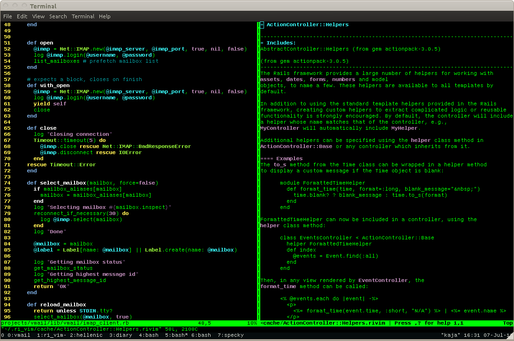
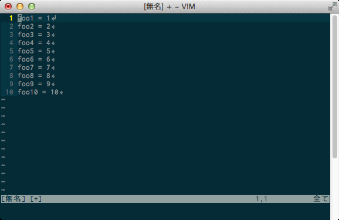

<font color="red">vim</font> 入門 <!-- <img src="hoge.png" width="75%" alt=""> --> ---- なんで vim 使うん？ ---- ・かっこいい ・軽い ・速い ・サーバの操作 ---- ・<font color="red">かっこいい </font> ・軽い ・速い ・サーバの操作 ----  ---- まるで ハッカー ---- ・かっこいい ・<font color="red">軽い</font> ・速い ・サーバの操作 ---- なぜ軽いのか →CUIツール ---- マウスのない 時代から 使われていた ---- キーボードだけ で使われる ---- ・かっこいい ・軽い ・<font color="red">速い</font> ・サーバの操作 ---- 文頭文末へ コマンド 一発で移動 ----  ---- ありとあらゆる 文書操作コマンド ---- ・かっこいい ・軽い ・速い ・<font color="red">サーバの操作</font> ---- サーバでの テキスト編集は vimが基本 ---- サーバは CUIが普通 ---- どうやって 使うのか ---- 2つのモード ノーマルモード 挿入モード ---- ノーマルモード ・カーソルの移動 ・各種コマンド ・hjklで←↓↑→ ---- 挿入モード ・文字の挿入 ---- 自分好みの 設定に変更 ---- .vimrc ---- お わ り